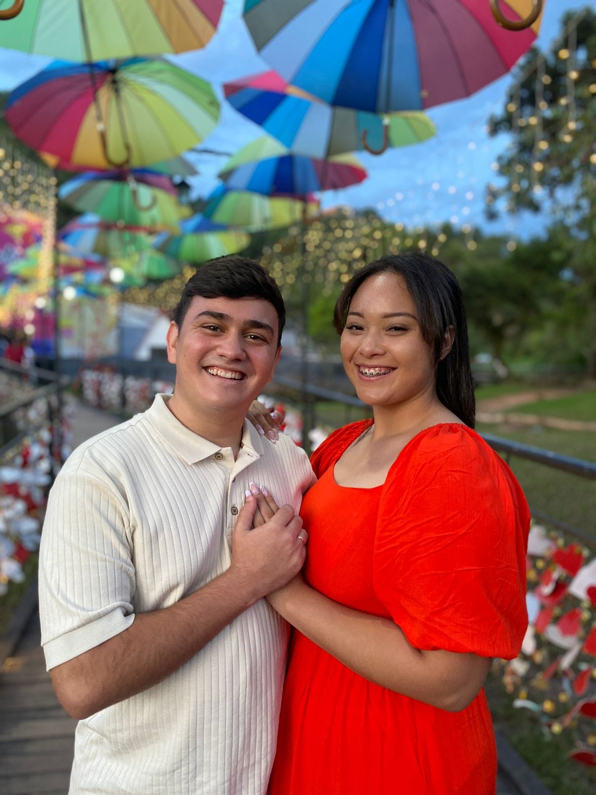
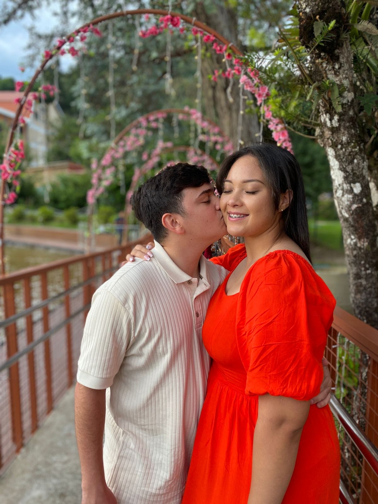

"Como o destino os uniu.."
Camilly e Arthur se encontraram pela primeira vez em agosto de 2022, em uma ocasião inesperada que parecia ter sido cuidadosamente orquestrada pelo destino. Foi após um culto da mocidade, durante um simples lanche noturno, que tudo começou. Enquanto a noite chegava ao fim e as despedidas se aproximavam, Arthur reuniu coragem para ir até Camilly e iniciar uma conversa que mudaria suas vidas para sempre. Um gesto singelo, um pedido de contato, e uma nova jornada se iniciou. Desde aquele momento, algo profundo começou a florescer entre eles. As primeiras conversas revelaram muito mais do que interesses comuns; mostraram sonhos semelhantes, valores compartilhados e um desejo sincero de construir um futuro lado a lado. A amizade que nasceu ali se tornou a base de um amor que cresceu com intensidade e ternura.
Em 17 de dezembro de 2022, esse laço se transformou em namoro, um capítulo cheio de risos, cumplicidade e descobertas. Cada dia era uma prova de que o que sentiam era verdadeiro e profundo. O amor, assim como uma chama suave e constante, iluminava suas vidas e os guiava em cada passo. No dia 22 de dezembro de 2023, um ano e alguns dias depois, Arthur fez o pedido mais importante de sua vida: convidou Camilly para ser sua companheira para sempre. A resposta foi um sim repleto de emoção e promessas silenciosas de um futuro repleto de aventuras, carinho e fé.
Hoje, Camilly e Arthur estão prestes a iniciar uma nova fase, prontos para celebrar essa história que é tão autêntica quanto o encontro inesperado que os uniu. Com o coração transbordando de amor e a certeza de que cada desafio e conquista os trouxeram até aqui, eles olham para frente, prontos para construir uma vida juntos. E assim, como no primeiro encontro, confiam que o destino continuará guiando seus passos em direção a um futuro brilhante, cheio de bênçãos e felicidade.